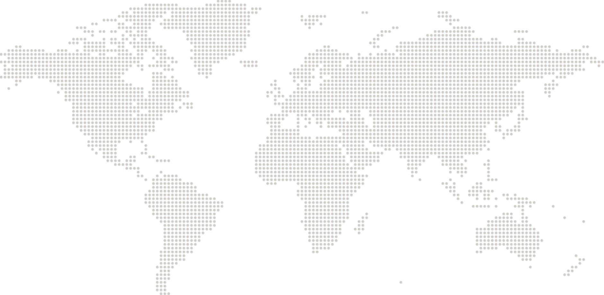

Cooperation
Partners

National School of Local Administration (NASLA)
In 2024, LOGODI signed a MOU with NASLA in 2024 for further cooperation in the area of capacity building of government officials.
LOGODI's past trainings for Cambodian officials can be found below.
| Year | Program | Term | Participants |
|---|---|---|---|
| 2024 | LOGODI Global Forum 2024 | Oct. 29 | 2 |
| 2023 | LOGODI Global Forum 2023 | Oct. 23 | 1 |
| Capacity Development Program for National School of Local Administration (Cambodia) | Jul. 30 - Aug. 9 | 15 | |
| 2022 | LOGODI Global Forum 2022 | Oct. 25 | 1 |
| Capacity Development Program for National School of Local Administration (Cambodia) | Jun. 20 - 24 | 20 | |
| 2021 | LOGODI Global Forum 2021 | Oct. 26 | 1 |
| Capacity Development Program for National School of Local Administration (Cambodia) | Jun. 8 - 14 | 22 | |
| 2020 | LOGODI Global Forum 2020 | Oct. 27 | 1 |
| 2019 | LOGODI Global Forum 2019 | June 17 - 18 | 1 |
| 2018 | On-Site Training Program | Nov. 6 - 8 | 80 |
School of Continuing Education (Tsinghua University)
LOGODI signed an MOU with Tsinghua University's School of Continuing Education (SCETU) in May 2008, agreeing to cooperate for the capacity building of government officials. Major initiatives have included an exchange program for Korean and Chinese local government officials as well as jointly hosted annual seminars, with venues alternating between Korea and China, since 2007. Each year, around 100 public officials and experts converge to address local governance and policy issues faced by both countries. To celebrate its tenth year in 2016, the seminar for that year was held in Jeju.
LOGODI's past seminars with SCETU can be found below.
| Year | Seminar | Location | Term | Participants | |
|---|---|---|---|---|---|
| Korea | China | ||||
| 2024 | Working Together for Better Future | KR Wanju | Oct. 17 | 50 | 6 |
| 2022 | Retrospection and Futures of Local Governments's Exchanges and Cooperation | KR Webinar | Dec. 1 | 100 | in total |
| 2021 | Economic Recovery and Suatainable Development in the Post Corona Era | CN Webinar | May. 27 | 20 | 55 |
| 2020 | Chances and Challenges for the Sustainable Development in the Post Corona Era | KR Webinar | Nov. 5 | 40 | 20 |
| 2019 | Digital Economy Era and Government Innovation | CN Beijing | Nov. 22 | 12 | 100 |
| 2018 | Local Government Innovation and Sustainable Regional Development | KR Wanju | May. 24 | 108 | 12 |
| 2017 | Big Data and the Smart City | CN Fuzhou | Dec. 15 | 12 | 88 |
| 2016 | Big Data and Administrative Innovation | KR Jeju | May. 9 - 12 | 12 | 15 |
| 2015 | Challenges and Opportunities in the Internet Era: Social Governance and Public Health Services | CN Yantai | Sep. 7 - 10 | 12 | 14 |
| 2014 | Enhancing the Public's Quality of Life through the Improvement of Local Government Services | KR Pyeongchang | Sep. 22 - 26 | 142 | 12 |
| 2013 | Revitalizing Collaborative Administration for Public Safety | CN Arxan | Aug. 26 - 30 | 12 | 131 |
| 2012 | Risk Management and Competitiveness of Local Government | KR Busan | May. 7 - 10 | 108 | 11 |
| 2011 | Local Government Capacity Building | CN Beijing | May. 13 - 16 | 10 | 100 |
| 2010 | Regional Development for Sustainable Development | KR Suwon | Apr. 27 - 29 | 108 | 8 |
| 2009 | Impact of Financial Crisis and Countermeasures | CN Beijing | Sep. 22 - 25 | 8 | 100 |
| 2008 | Increasing National Competitiveness and Regional Development Strategy * MOU Signing * Study Visit Program for Korean Local Government Officials to China | KR Suwon | May. 7 - 9 | 88 | 13 |
| 2007 | Balanced Regional Development | CN Beijing | Dec. 2 - 5 | 27 | 153 |
National Institute for Governance and Sustainable Development (NIGSD)
From 2004, LOGODI conducted a series of programs in executive development for Egyptian government officials. A program on public sector management was soon launched, and, in 2010, LOGODI's president along with Korean subject matter experts traveled to the country to run an "Executive Leadership Development Program" and host a reunion for 100 Egyptian alumni and other officials.
LOGODI's past trainings for Egyptian officials can be found below.
| Year | Program | Term | Participants |
|---|---|---|---|
| 2024 | LOGODI Global Forum 2024 | Oct. 29 | 1 |
| On-site Training Program | Nov. 25 - 28 | 83 | |
| 2023 | LOGODI Global Forum 2023 | Oct. 23 | 1 |
| 2022 | LOGODI Global Forum 2022 | Oct. 25 | 1 |
| 2021 | LOGODI Global Forum 2021 | Oct. 26 | 1 |
| 2011 | Public Sector Management (Egypt) | Nov. 7 - 20 | 20 |
| 2010 | On-site Training Program | Oct. 16 - 23 | 100 |
| 2009 | Public Sector Development (Egypt) | May 14 - 29 | 14 |
| 2008 | Executive Development Program for Egyptian Officials | Feb. 21 - Mar. 7 | 15 |
| 2007 | Executive Development Program for Egyptian Officials | Feb. 19 - Mar. 6 | 20 |
| 2006 | Executive Development Program for Egyptian Officials | Sep. 13 - 27 | 15 |
| 2005 | Executive Development Program for Egyptian Officials | Oct. 23 - Nov. 4 | 10 |
| 2004 | Executive Development Program for Egyptian Officials | Nov. 6 - 18 | 10 |
Academy of Public Administration under the President of Kyrgyz Republic (APAPKR)
In 2018, LOGODI launched the Capacity Building Program for Kyrgyz government officials focused on Public Sector Management, HRD and HRM.
In addition, LOGODI singed a MOU with APAPKR in 2023 for further cooperation in the field of government officials training. LOGODI's past trainings for Kyrgyz officials can be found below.
| Year | Program | Term | Participants |
|---|---|---|---|
| 2025 | Capacity Building for Government HR Management in Kyrgyzstan | Jun. 29 - Jul. 9 | 15 |
| 2024 | LOGODI Global Forum 2024 | Oct. 29 | 1 |
| Capacity Building for Government HR Management in Kyrgyzstan | Sep. 29 - Oct. 9 | 18 | |
| 2023 | LOGODI Global Forum 2023 | Oct. 23 | 1 |
| Capacity Building for Government HR Management in Kyrgyzstan | Sep. 11 - 20 | 20 | |
| 2022 | LOGODI Global Forum 2022 | Oct. 25 | 1 |
| 2021 | LOGODI Global Forum 2021 | Oct. 26 | 1 |
| 2020 | LOGODI Global Forum 2020 | Oct. 27 | 1 |
| Human Resource Management in Public Sector in Kyrgyzstan | Sep. 11 - 20 | 14 | |
| 2019 | Human Resource Management in Public Sector in Kyrgyzstan | Sep. 23 - 29 | 14 |
| LOGODI Global Forum 2019 | Jun. 17 - 18 | 1 | |
| On-site Training Program | Apr. 20 - 25 | 100 | |
| 2018 | Human Resource Management in Public Sector in Kyrgyzstan | Nov. 19 - Dec. 2 | 18 |
National Academy of Governance
Since the signing of an arrangement between LOGODI and NAOG (until January 2011, the Academy of Management [AOM]) for "Mutual Exchange and Cooperation in the Field of Education and Training of Public Officials" in July 2002, LOGODI has been maintaining a close cooperative relationship with NAOG by conducting capacity building programs for its faculty and Mongolian government officials to share information, experiences, and ideas regarding education and training, subjects of common interest, and other areas. From the start of this partnership, LOGODI and NAOG have been renewing the arrangement every three years.
LOGODI's past programs for Mongolia can be found below.
| Year | Program | Term | Participants |
|---|---|---|---|
| 2024 | LOGODI Global Forum 2024 | Oct. 29 | 1 |
| Capacity Building Program for NAOG Faculty and Government Officials | May. 29 - Jul. 5 | 17 | |
| Capacity Building Program for Local Government Officials | Apr. 21 - 27 | 12 | |
| Capacity Building Program for Senior Officials (Mongolia) | Apr. 17 - 24 | 23 | |
| Capacity Building Program for NAOG Faculty and Staff | Mar. 17 - 24 | 15 | |
| 2023 | Capacity Building Program for Mongolian Government Officials | Nov. 2 - 10 | 14 |
| LOGODI Global Forum 2023 | Oct. 23 | 1 | |
| Capacity Building Program for Mongolian Government Officials | Oct. 12 - 20 | 10 | |
| Capacity Building Program for Local Government Officials | Apr. 23 - 29 | 12 | |
| Capacity Building Program for NAOG Faculty and Staff | Mar. 12 - 18 | 12 | |
| 2022 | Capacity Building Program for Mongolian Government Officials in Korea | Dec. 12 - 15 | 12 |
| Capacity Building Program for Senior Local Government Officials (Mongolia) | Nov. 15 - 16 | 150 | |
| LOGODI Global Forum 2022 | Oct. 25 | 1 | |
| Capacity Building Program for NAOG Faculty and Staff (Mongolia) | Mar. 21 - 25 | 21 | |
| 2021 | Capacity Building Program for Local Government Officials (Mongolia) | Nov. 30 - Dec. 3 | 460 |
| LOGODI Global Forum 2021 | Oct. 26 | 1 | |
| Capacity Building Program for NAOG Faculty and Officials (Mongolia) | Mar. 2 - 5 | 68 | |
| 2020 | LOGODI Global Forum 2020 | Oct. 27 | 1 |
| Study Visit Program for NAOG Faculty and Officials (Mongolia) | Feb. 9 - 16 | 14 | |
| 2019 | LOGODI Global Forum 2019 | Jun. 17 -18 | 1 |
| Study Visit Program for NAOG Faculty and Officials (Mongolia) | Mar. 10 - 17 | 15 | |
| Capacity Building Program for Senior Officials (Mongolia) | Feb. 17 - 24 | 15 | |
| 2018 | Study Visit Program for NAOG Faculty and Senior Officials (Mongolia) | May. 27 - Jun. 3 | 15 |
| Capacity Building Program for Senior Officials (Mongolia) | Mar. 11 - 18 | 14 | |
| 2017 | On-Site Training Program | Jun. 20 - 24 | 130 |
| Study Visit Program for NAOG Faculty and Senior Officials (Mongolia) | Mar. 19 - 26 | 15 | |
| Capacity Building Program for Senior Officials (Mongolia) | Mar. 5 - 12 | 14 | |
| 2016 | Study Visit Program for NAOG Faculty and Senior Officials (Mongolia) | Dec. 11 - 18 | 17 |
| Study Visit Program for NAOG Faculty and Senior Officials (Mongolia) | Mar. 7 - 13 | 15 | |
| 2015 | Capacity Building Program for Senior Officials (Mongolia) | Apr. 26 - May 3 | 13 |
| Study Visit Program for NAOG Faculty and Senior Officials (Mongolia) | Mar. 1 - 8 | 14 | |
| 2014 | On-Site Training Program | Sep. 1 - 6 | 820 |
| Capacity Building Program for Senior Officials from Mongolia | Apr. 27 - May. 4 | 14 | |
| Study Visit Program for NAOG Faculty and Senior Officials (Mongolia) | Feb. 23 - Mar. 2 | 15 | |
| 2013 | Capacity Building Program for Senior Officials from Sukhbaatar Province, Mongolia | Nov. 24 - Dec. 1 | 12 |
| Study Visit Program for NAOG Faculty and Senior Officials (Mongolia) | Sep. 8 - 15 | 15 | |
| 2012 | Study Visit Program for NAOG Faculty and Senior Officials (Mongolia) | Dec. 2 - 9 | 18 |
| 2011 | Training of Trainers Program for NAOG Faculty (Mongolia) | Dec. 4 - 11 | 12 |
| On-site Training Program | Jun. 7 - 11 | 130 | |
| 2010 | Training of Trainers Program for AOM Faculty | Nov. 21 - 28 | 11 |
| Capacity Building Program for Senior Local Government Officials from Mongolia | Jul. 27 - Aug. 3 | 23 | |
| 2009 | Study Visit of Mongolian Provincial Governors to Korea | Dec. 5 - 12 | 14 |
| Training of Trainers Program for AOM Faculty | Nov. 21 - 28 | 15 | |
| 2008 | Capacity Building Program for AOM Faculty (Mongolia) | Dec. 1 - 6 | 12 |
| Administrative Information Management, Mongol, (UNDP Joint Training) | Nov. 13 - 28 | 13 | |
| 2007 | Capacity Building Program for Mongolian Government Officials | Dec. 11 - 18 | 13 |
| Administrative Information Management, Mongol, (UNDP Joint Training) | Nov. 15 - 30 | 19 | |
| Capacity Building Program for AOM Faculty (Mongolia) | Aug. 17 - 21 | 8 | |
| LOGODI Executive Leadership Development Program in Mongolia | Jun. 2 - 8 | 130 | |
| 2006 | Capacity Building Program for AOM Faculty (Mongolia) | Dec. 7 - 14 | 11 |
| 2005 | Partnership Building Program with Young Leaders of Mongolia | Dec. 11 - 18 | 11 |
| Capacity Building Program for District Vice Governors of UB City Government (Mongolia) | Oct. 12 - 19 | 8 | |
| Capacity Building Program for AOM Faculty (Mongolia) | Sep. 8 - 15 | 8 | |
| 2004 | Study Visit Program for Senior Officials from the Cabinet Secretariat, Mongolia | Dec. 13 - 19 | 3 |
| 2003 | Executive Development Program for Mongolian Government Officials | Sep. 15 - 28 | 16 |
| Training Program for AOM Graduate Students (Mongolia) | Jul. 24 - 28 | 16 | |
| 2002 | Executive Development Program for Mongolian Government Officials | Sep. 4 - 16 | 15 |
| 2001 | Training Program for Senior Officials from the Cabinet Secretariat, Mongolia | Dec. 12 - 21 | 12 |
| Study Visit Program for Mongolian Provincial Governors | Oct. 22 - Nov. 4 | 23 |
National Authority for Civil Service
LOGODI's relationship with Peru started in 2000, when two of the country’s officials took part in the Local Administration Development Program launched that year, sponsored by KOICA. Peruvian officials have since been a part of the program in subsequent years, and in one customized for the country on capacity development in public administration. On September 15, 2017 - during its first on-site training in Latin America - LOGODI entered into an “Arrangement Concerning Mutual Exchange and Cooperation in the Field of Education and Training of Public Officials” with SERVIR in Lima.
LOGODI's past programs for Peru can be found below.
| Year | Program | Term | Participants |
|---|---|---|---|
| 2024 | LOGODI Global Forum 2024 | Oct. 29 | 1 |
| 2023 | LOGODI Global Forum 2023 | Oct. 23 | 1 |
| 2022 | LOGODI Global Forum 2022 | Oct. 25 | 1 |
| Experiences and Challenges for the Management of Innovation in the Generation of Public Value | Oct. 11 - 21 | 20 | |
| 2021 | Experiences and Challenges for the Management of Innovation in the Generation of Public Value | Sep. 28 - Oct. 13 | 22 |
| LOGODI Global Forum 2021 | Oct. 26 | 1 | |
| 2020 | LOGODI Global Forum 2020 | Oct. 27 | 1 |
| Expereiences and Challenges for the Mangament of Innovation in the Generation of Public Value | Oct. 12 - 21 | 18 | |
| 2019 | LOGODI Global Forum 2019 | Jun. 17 - 18 | 1 |
| 2018 | Capacity Development for Public Administration (Peru) | Apr. 8 - 28 | 15 |
| 2017 | On-Site Training Program | Sep. 14 - 23 | 430 |
| Capacity Development for Public Administration (Peru) | Apr. 6 - 26 | 13 | |
| 2016 | Capacity Development for Public Administration (Peru) | Sep. 25 - Oct. 15 | 15 |
Local Government Training Institute
Since 2007, LOGODI has run programs in public sector management and other areas for Tanzanian government officials. Its agreement with LGTI on cooperation and exchange for the capacity building of public officials was established in April 2012.
LOGODI's past programs for Tanzania can be found below.
| Year | Program | Term | Participants |
|---|---|---|---|
| 2024 | LOGODI Global Forum 2024 | Oct 29 | 1 |
| 2023 | LOGODI Global Forum 2023 | Oct 23 | 1 |
| 2022 | LOGODI Global Forum 2022 | Oct 25 | 1 |
| 2021 | LOGODI Global Forum 2021 | Oct. 26 | 1 |
| 2020 | LOGODI Global Forum 2020 | Oct. 27 | 1 |
| 2019 | Capacity Building on Local Government Administration and Leadership Management | Aug. 25 - Sep. 7 | 15 |
| LOGODI Global Forum 2019 | Jun. 17 - 18 | 1 | |
| 2018 | Capacity Building on Local Government Administration and Leadership Management | Sep. 6 - 19 | 10 |
| 2015 | Local Administration Management (Tanzania) | May. 10 - 30 | 20 |
| 2014 | Local Administration Management (Tanzania) | May. 11 - 30 | 15 |
| 2013 | Local Administration Management (Tanzania) | May. 26 - Jun. 15 | 15 |
| 2012 | Local Administration Management (Tanzania) | Sep. 9 - 29 | 15 |
| On-site Training Program | Mar. 23 - Apr. 1 | 130 | |
| 2011 | Local Administration Management (Tanzania) | Oct. 9 - 25 | 15 |
| 2010 | Public Sector Development (Tanzania) | Sep. 23 - Oct. 16 | 12 |
| 2009 | Public Sector Development (Tanzania) | Jul. 16 - 31 | 12 |
| 2008 | Local Administration Program for Tanzanian Senior Officials | Jul. 17 - Aug. 1 | 12 |
| 2007 | Local Administration Program for Tanzanian Senior Officials | Sep. 5 - 20 | 15 |
Sukhothai Thammathirat Open University
On May 1, 2012, LOGODI signed an MOU with STOU on cooperation and exchange for the capacity building of public officials as well as the development of training programs.
LOGODI's past programs for Thailand can be found below.
| Year | Program | Term | Participants |
|---|---|---|---|
| 2023 | LOGODI Global Forum 2023 | Oct. 23 | 1 |
| 2021 | LOGODI Global Forum 2021 | Oct. 25 | 1 |
| 2018 | STOU Study Visit Program on Comparative Politics and Local Government (Thailand) | Nov. 14 - 18 | 33 |
| 2015 | On-Site Training Program | Aug. 21 - 26 | 160 |
| 2012 | Capacity Building Program for STOU MA Students and Thai Government Officials | Nov. 5 - 10 | 26 |
| 2011 | HRM/HRD Competency Improvement Training Program for BMA, Thailand | Feb. 7 - 13 | 38 |
| 2009 | LOGODI Executive Training Program for Thai City CEOs | Mar. 16 - 22 | 29 |
| 2008 | LOGODI Executive Training Program for Thai City CEOs | Oct. 27 - Nov. 3 | 35 |
| LOGODI Executive Training Program for Thai Local Government Officals | Jul. 6 - 11 | 33 |
National Academy of Public Administration
On December 6, 2007, LOGODI signed a Cooperation Agreement with NAPA concerning exchange and cooperation in the capacity development of public officials.
LOGODI's past training for Vietnamese officials can be found below.
| Year | Program | Term | Participants |
|---|---|---|---|
| 2024 | LOGODI Global Forum 2024 | Oct. 29 | 1 |
| Digital Capacity Building Program for Senior Officials of Hai Phong City (Vietnam) | Jul. 21 - Aug. 3 | 8 | |
| 2021 | TOT Program for NAPA | Nov. 11 | 30 |
| 2019 | On-site Training Program in Lang son Province | Nov. 4 - 8 | 65 |
| 2016 | Capacity Building of the Local Governments(Vietnam) | Jun. 26 - Jul. 16 | 25 |
| 2015 | Capacity Building of the Local Governments(Vietnam) | Oct. 25 - Nov. 14 | 25 |
| 2014 | Capacity Building of Local Authority for Lang son Province(Vietnam) | Nov. 26 - Dec. 9 | 15 |
| 2012 | Capacity Building Program for Government Officials from Vietnam | Jul. 16 - 22 | 15 |
| 2008 | Capacity Building Program for NAPA | Nov. 4 - 9 | 17 |
| 2008 | Study Visit Program for Veitnamese Government Officials | Aug. 3 - 9 | 13 |
| 2007 | Capacity Development for Senior Officials from the Central Committe | Apr. 2 - 14 | 18 |
| 2006 | Capacity Building Program for Senior Officials | Aug. 13 - 19 | 14 |
Academy of Public Policy and Administration (APPA)
In 2025, LOGODI signed a MOU with APPA for further cooperation in the area of capacity building of government officials.
LOGODI's past trainings for Uzbek officials can be found below.
| Year | Program | Term | Participants |
|---|---|---|---|
| 2025 | LOGODI Global Forum 2025 | Sep. 3 | 2 |
Local Government Academy (LGA)
In 2025, LOGODI signed a MOU with LGA for further cooperation in the area of capacity building of government officials.
LOGODI's past trainings for Philippine officials can be found below.
| Year | Program | Term | Participants |
|---|---|---|---|
| 2025 | LOGODI Global Forum 2025 | Sep. 3 | 2 |
| Capacity Building on Digital Transformation and Administrative Innovation for Civil Servants in the Philippines | Sep. 15 - 23 | 12 | |
| Capacity Building Program for Officials of the Department of the Interior and Local Government(DILG) of the Philippines | Feb. 17 - 28 | 44 | |
| 2024 | LOGODI Global Forum 2024 | Oct. 29 | 1 |
| Capacity Building Program for Local Government Leaders from Taguig City (Philippines) | Nov. 17 - 30 | 39 | |
| 2023 | LOGODI Global Forum 2023 | Oct. 23 | 1 |
| 2022 | LOGODI Global Forum 2022 | Oct. 25 | 1 |
| Enhanced Cooperation Program for Government Officials in the Philippines | Sep. 7 | 96 | |
| 2021 | LOGODI Global Forum 2021 | Oct. 26 | 1 |
| 2020 | LOGODI Global Forum 2020 | Oct. 27 | 1 |
| 2019 | LOGODI Global Forum 2019 | Jun. 17 - 18 | 1 |
| 2010 | Capacity Development Program for Local Administration (Philippines) | Aug. 21 - Sep. 3 | 14 |